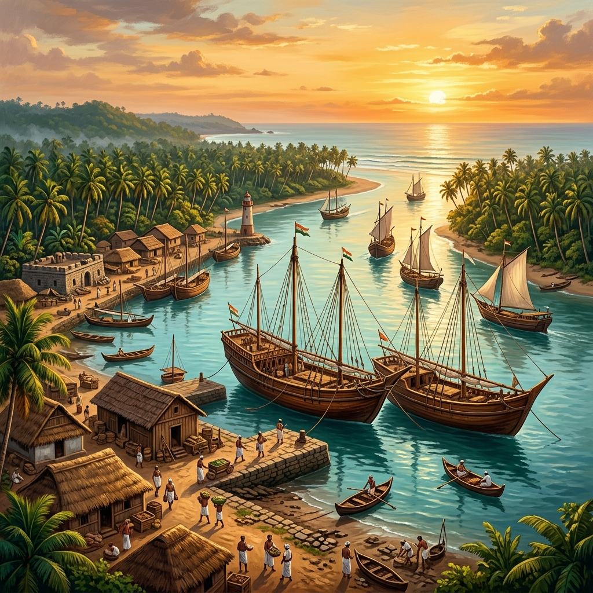
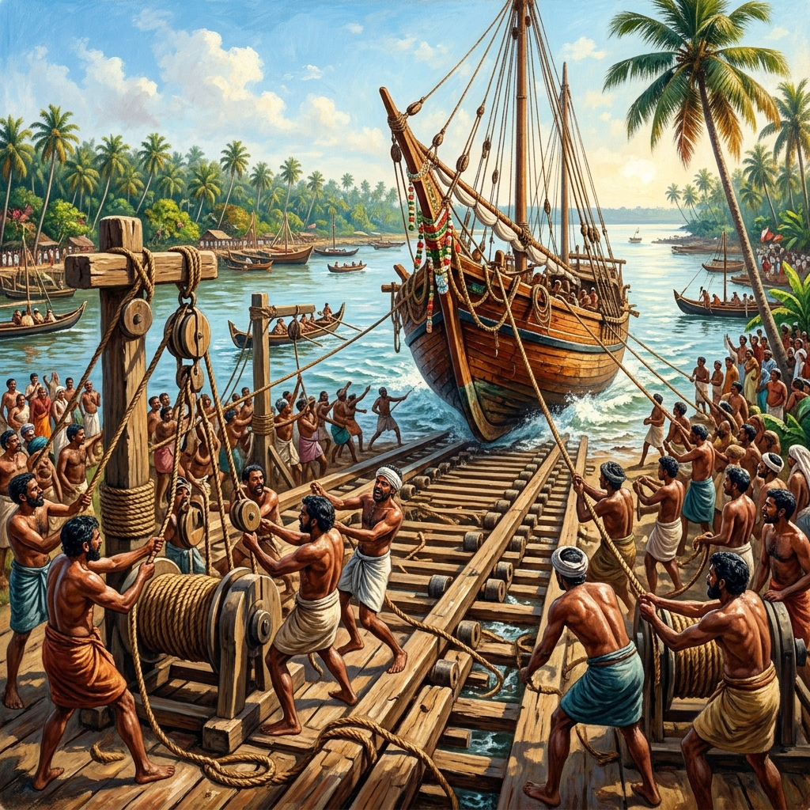

Beypore Ancient Port Explorer
Explore Beypore, one of Kerala's most historic maritime gateways. Famous for over two millennia of international trade and the world-renowned traditional wooden shipwright craft of crafting Uru sailing dhows.
Cradle of Seafaring & Timber Trade
Situated at the mouth of the perennial Chaliyar River near Kozhikode (Calicut), Beypore (historically known as Vaypura or Bypore) has been a strategic maritime hub for over 2,000 years. Its position allowed seamless river navigation directly into the dense, high-altitude teak forests of Nilambur.
During antiquity, merchants from Mesopotamia, Sumeria, Ancient Egypt, Greece, and Rome journeyed to Beypore for its premium Malabar teak wood, aromatic spices, coir cordage, and handloom textiles. Later under the Zamorins of Calicut, Beypore emerged as a vital naval dockyard and trading sanctuary.
📜 Maritime Archives
- Chaliyar Estuary: Natural deepwater river mouth providing calm mooring for ocean fleets.
- Nilambur Teak Hub: Direct inland water route to fetch legendary water-resistant teak timber.
- Zamorin Dockyards: Principal naval arsenal and vessel crafting center of the Samoothiri rulers.
Maritime Trade Significance & Global Connections
Beypore served as an indispensable link connecting India to the Arabian Peninsula, East Africa, China, and Europe.
Nilambur Teak Export
Known for exceptional oil content and zero rot in saltwater, Nilambur teak felled in the Western Ghats was floated down the Chaliyar river directly to Beypore's shipyards.
The Arabian Gulf Trade
Arabian traders and royal dynasties from Oman, Qatar, Kuwait, and the UAE commissioned custom wooden dhows from Beypore shipwrights for centuries.
Fortaleza de Chale (1531)
The Portuguese constructed a strategic laterite fort at Beypore in 1531 to command trade lanes, which was later besieged and dismantled by the Zamorin's naval forces in 1575.
1861 Railway Terminus
Recognized for its commercial weight, Beypore was selected as the western terminus for South India's second oldest railway line opened by Madras Railway in 1861.
Traditional Uru Shipbuilding & Khalasi Craft
Discover the art of crafting Uru wooden dhows without written blueprints, guided by master shipwrights (Maistry) and launched by the legendary Khalasis.

1. Keel Laying (Eratavu)
The construction of an Uru begins with the laying of the Eratavu (keel). Carved from a massive, flawless trunk of Nilambur Teak, the keel serves as the primary spine of the entire ship. Master shipwrights (Maistry) perform ritual measurements using wooden rods (kolu) to ensure perfect symmetry.
⚙️ Beypore Khalasi Winch & Load Calculator
Simulate how Khalasis use wooden winches (Tambu), levers, and pulley physics to haul vessels without modern electric cranes.
Chronology of Beypore Port
Tracing Beypore's evolution from ancient Vaypura trade station to a global wooden shipbuilding heritage center.
Ancient Vaypura Haven
Roman and Mesopotamian merchant vessels visit Chaliyar estuary to trade gold for Nilambur teak and Malabar spices.
Zamorin Naval Era
Beypore becomes the central dockyard for the Zamorins of Calicut, building warships and merchant fleets.
Portuguese Fortaleza de Chale
The Portuguese construct a stone fort in Beypore; recaptured and completely leveled by Zamorin's army in 1575.
Tipu Sultan's Dockyard
Mysorean ruler Tipu Sultan expands Beypore's naval base to construct heavy ocean combat vessels.
Madras Railway Terminus
Opening of the Madras Railway line connecting Beypore directly to Madras (Chennai), accelerating commercial shipping.
GI Tag Recognition
Geographical Indication (GI) application filed for Beypore Uru, preserving the centuries-old Khalasi craft for posterity.
Shipyards & Waters of Beypore
Experience the maritime legacy and master craftsmanship of Beypore's riverfront.


📚 References & Further Reading
- Logan, William (1887). Malabar Manual. Government Press Madras.
- Panikkar, K. M. (1929). Malabar and the Portuguese. D. B. Taraporevala Sons.
- Varadarajan, Lotika (1998). Sewn Boats of Lakshadweep and Malabar Coast. National Institute of Science, Technology and Development Studies.
- Department of Cultural Affairs. Beypore Uru & Khalasi Maritime Heritage Survey. Government of Kerala.